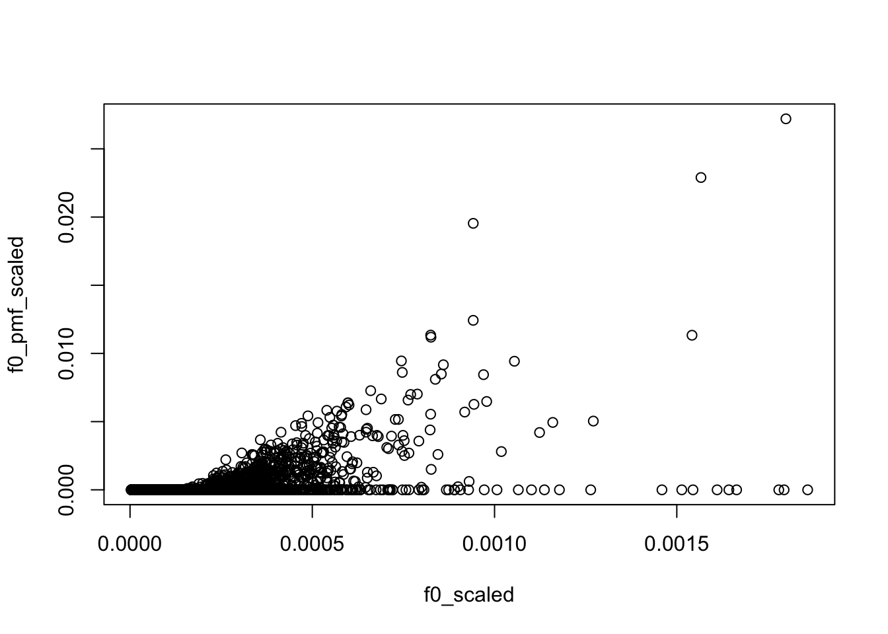

kos_K50_ebpmf.alpha_v0.3.9
zihao12
2020-05-11
Last updated: 2020-05-18
Checks: 7 0
Knit directory: ebpmf_data_analysis/
This reproducible R Markdown analysis was created with workflowr (version 1.6.2). The Checks tab describes the reproducibility checks that were applied when the results were created. The Past versions tab lists the development history.
Great! Since the R Markdown file has been committed to the Git repository, you know the exact version of the code that produced these results.
Great job! The global environment was empty. Objects defined in the global environment can affect the analysis in your R Markdown file in unknown ways. For reproduciblity it’s best to always run the code in an empty environment.
The command set.seed(20200511) was run prior to running the code in the R Markdown file. Setting a seed ensures that any results that rely on randomness, e.g. subsampling or permutations, are reproducible.
Great job! Recording the operating system, R version, and package versions is critical for reproducibility.
Nice! There were no cached chunks for this analysis, so you can be confident that you successfully produced the results during this run.
Great job! Using relative paths to the files within your workflowr project makes it easier to run your code on other machines.
Great! You are using Git for version control. Tracking code development and connecting the code version to the results is critical for reproducibility.
The results in this page were generated with repository version 17d7f38. See the Past versions tab to see a history of the changes made to the R Markdown and HTML files.
Note that you need to be careful to ensure that all relevant files for the analysis have been committed to Git prior to generating the results (you can use wflow_publish or wflow_git_commit). workflowr only checks the R Markdown file, but you know if there are other scripts or data files that it depends on. Below is the status of the Git repository when the results were generated:
Ignored files:
Ignored: .Rhistory
Ignored: .Rproj.user/
Ignored: analysis/ebpmf_bg_tutorial_cache/
Untracked files:
Untracked: analysis/compare_LF.R
Untracked: analysis/plot_topic_words.R
Untracked: code/.util.R.swp
Note that any generated files, e.g. HTML, png, CSS, etc., are not included in this status report because it is ok for generated content to have uncommitted changes.
These are the previous versions of the repository in which changes were made to the R Markdown (analysis/kos_K50_ebpmf.alpha_v0.3.9.Rmd) and HTML (docs/kos_K50_ebpmf.alpha_v0.3.9.html) files. If you’ve configured a remote Git repository (see ?wflow_git_remote), click on the hyperlinks in the table below to view the files as they were in that past version.
| File | Version | Author | Date | Message |
|---|---|---|---|---|
| Rmd | 17d7f38 | zihao12 | 2020-05-18 | update analysis for v0.3.9 |
| html | 88cc049 | zihao12 | 2020-05-16 | Build site. |
| Rmd | 20a60fd | zihao12 | 2020-05-16 | update analysis for results in v0.3.9 |
| html | 7928026 | zihao12 | 2020-05-16 | Build site. |
| Rmd | 3e38a38 | zihao12 | 2020-05-16 | analysis for results in v0.3.9 |
Introduction
- I apply
ebpmf.alpha(version 0.3.9) to KOS dataset. I use \(K = 50\). The data has \(n = 3430,p = 6906\) and sparsity around \(98\) percent.
- Besides, I also apply to
PMF(lee’s, but I implemented a version for sparse data) to the same dataset with the same initialization. In each iteration,ebpmf_bgdoes two things: MLE for prior and updates posterior. The second part has almost the same computation as inPMF.
model
\[\begin{align} & X_{ij} = \sum_k Z_{ijk}\\ & Z_{ijk} \sim Pois(l_{i0} f_{j0} l_{ik} f_{jk})\\ & l_{ik} \sim g_{L, k}(.), f_{jk} \sim g_{F, k}(.) \end{align}\]For details see ebpmf_bg
prior options
I use gamma mixture \(\sum_l \pi_{l} Ga(1/\phi_l, 1/\phi_l)\) as prior for both \(L, F\). Note that each grid component has \(E = 1, Var = \phi_L\)
initialization
I initialized with 50 runs of NNLM::nnmf (scd). Then I used medians of each row of \(L, F\) as \(l_{i0}, f_{j0}\), and \(l_{ik} = l^0_{ik}/l_{i0}, f_{jk} = f^0_{jk}/f_{j0}\).
library(pheatmap)Warning: package 'pheatmap' was built under R version 3.5.2library(gridExtra)
source("code/misc.R")
source("code/util.R")
output_dir = "output/uci_BoW/v0.3.9/"
data_dir = "data/uci_BoW/"
model_name = "kos_ebpmf_bg_initLF50_K50_maxiter2000.Rds"
model_pmf_name = "kos_pmf_initLF50_K50_maxiter2000.Rds"
dict_name = "vocab.kos.txt"
data_name = "docword.kos.txt"
Y = read_uci_bag_of_words(file= sprintf("%s/%s",
data_dir,data_name))
model = readRDS(sprintf("%s/%s", output_dir, model_name))
model_pmf = readRDS(sprintf("%s/%s", output_dir, model_pmf_name))
dict = read.csv(sprintf("%s/%s", data_dir, dict_name), header = FALSE)[,1]
dict = as.vector(dict)
K = ncol(model_pmf$L)
L_pmf = model_pmf$L; F_pmf = model_pmf$F
L_bg = model$l0 * model$qg$qls_mean; F_bg = model$f0 * model$qg$qfs_mean
lf = poisson2multinom(L=L_bg,F=F_bg)
lf_pmf = poisson2multinom(L = L_pmf,F = F_pmf)ELBO and runtime
plot(model$ELBO, xlab = "niter", ylab = "elbo")
| Version | Author | Date |
|---|---|---|
| 7928026 | zihao12 | 2020-05-16 |
## see when it "converges"
plot(model$ELBO[1:200], xlab = "niter", ylab = "elbo")
| Version | Author | Date |
|---|---|---|
| 7928026 | zihao12 | 2020-05-16 |
## ebpmf_bg runtime per iteration
model$runtime/length(model$ELBO) user system elapsed
25.1001780 0.0507705 25.1611020 ## pmf runtime per iteration
model_pmf$runtime/length(model_pmf$log_liks) user system elapsed
11.738463 0.042293 11.784945 look at priors in ebpmf_bg
look at \(s_k\) (ebpmf_bg)
\(s_k := \sum_i l_i0 \bar{l}_{ik}\). I make \(\sum_j f_{j0} = 1\) for interpretability.
d = sum(model$f0)
s_k = colSums(d * model$l0 * model$qg$qls_mean)
names(s_k) <- paste("Topic", 1:K, sep = "")
step = 5
for(i in 1:round(K/step)){
print(round(s_k[((i-1)*step + 1):(i*step)]))
}Topic1 Topic2 Topic3 Topic4 Topic5
7544 7216 7912 25180 35652
Topic6 Topic7 Topic8 Topic9 Topic10
6709 21141 7208 11120 15791
Topic11 Topic12 Topic13 Topic14 Topic15
6953 12764 6206 25344 11313
Topic16 Topic17 Topic18 Topic19 Topic20
21599 13245 25545 25615 17418
Topic21 Topic22 Topic23 Topic24 Topic25
25117 24237 17946 22377 11739
Topic26 Topic27 Topic28 Topic29 Topic30
12942 20370 5179 13057 15220
Topic31 Topic32 Topic33 Topic34 Topic35
19897 22743 18122 17739 14611
Topic36 Topic37 Topic38 Topic39 Topic40
14671 30433 15525 16151 11059
Topic41 Topic42 Topic43 Topic44 Topic45
18014 11715 19915 12562 15720
Topic46 Topic47 Topic48 Topic49 Topic50
22557 23555 13324 18395 20023 what does background capture
compared to rank-1 fit
Is the background very different from the rank-1 model? The rank-1 MLE has \(l_{i0} \propto \sum_j X_{ij}\) and \(f_{j0} \propto \sum_i X_{ij}\). Let’s see if the fitted background model is close to it.
Y_cs = Matrix::colSums(Y)
Y_cs_scaled = Y_cs/sum(Y_cs)
f0_scaled = model$f0/sum(model$f0)
plot(f0_scaled, Y_cs_scaled)
Y_rs = Matrix::rowSums(Y)
Y_rs_scaled = Y_rs/sum(Y_rs)
l0_scaled = model$l0/sum(model$l0)
plot(l0_scaled, Y_rs_scaled)compared to median/mean of PMF fit
The median of \(L\) from PMF are all 0, so I use mean instead for it
f0_pmf = apply(F_pmf, 1, median)
f0_pmf_scaled = f0_pmf/sum(f0_pmf)
l0_pmf = apply(L_pmf, 1, mean)
l0_pmf_scaled = l0_pmf/sum(l0_pmf)
plot(f0_scaled, f0_pmf_scaled)
plot(l0_scaled, l0_pmf_scaled)Compare \(L, F\) (in the context of PMF model)
See plots.
Note: I scale them as below
## scale L, F so that colSums(F) = 1
L_pmf = L_pmf %*% diag(colSums(F_pmf))
F_pmf = F_pmf %*% diag(1/colSums(F_pmf))
L_bg = L_bg %*% diag(colSums(F_bg))
F_bg = F_bg %*% diag(1/colSums(F_bg))look at top words for topics
See plots.
Note: for each topic:
* the first row selects the top words from \(\bar{f}_{Jk}\), and show them in \(\bar{f}\)(bg) and \(f\) (PMF) respectively.
* The second row shows the top words from \(f_{J0}0\bar{f}_{Jk}\) (bg) and \(f_{Jk}\) (PMF)
* The third row transforms \(f_{J0}0\bar{f}_{Jk}\) (bg) and \(f_{Jk}\) into multinomial model and show their top words.
take a closer look at some top words
I pick two top words from \(\bar{f}_{J1}\) and two top words from \(f_{J1}\):
d = Matrix::summary(Y)
## `burt`
idx = which(dict == "burt")
### number of occurence
sum(d$j == idx)[1] 16table(Y[,idx])
0 1 2 6
3414 13 2 1 ### background value
model$f0[idx][1] 1.482282e-05## `knowles`
idx = which(dict == "knowles")
### number of occurence
sum(d$j == idx)[1] 78table(Y[,idx])
0 1 2 3 4 5 6 7 8 9 12
3352 42 12 5 6 3 2 3 2 1 2 ### background value
model$f0[idx][1] 4.240542e-05## `campaign`
idx = which(dict == "campaign")
### number of occurence
sum(d$j == idx)[1] 960table(Y[,idx])
0 1 2 3 4 5 6 7 8 9 10 11 12 16
2470 511 204 104 58 36 20 11 7 4 1 2 1 1 ### background value
model$f0[idx][1] 0.001817356## `people`
idx = which(dict == "people")
### number of occurence
sum(d$j == idx)[1] 989table(Y[,idx])
0 1 2 3 4 5 6 7 8 13
2441 632 199 91 35 13 9 3 5 2 ### background value
model$f0[idx][1] 0.001846341
sessionInfo()R version 3.5.1 (2018-07-02)
Platform: x86_64-apple-darwin15.6.0 (64-bit)
Running under: macOS 10.14
Matrix products: default
BLAS: /Library/Frameworks/R.framework/Versions/3.5/Resources/lib/libRblas.0.dylib
LAPACK: /Library/Frameworks/R.framework/Versions/3.5/Resources/lib/libRlapack.dylib
locale:
[1] en_US.UTF-8/en_US.UTF-8/en_US.UTF-8/C/en_US.UTF-8/en_US.UTF-8
attached base packages:
[1] stats graphics grDevices utils datasets methods base
other attached packages:
[1] gridExtra_2.3 pheatmap_1.0.12
loaded via a namespace (and not attached):
[1] Rcpp_1.0.2 knitr_1.28 whisker_0.3-2 magrittr_1.5
[5] workflowr_1.6.2 munsell_0.5.0 lattice_0.20-38 colorspace_1.4-1
[9] R6_2.4.0 stringr_1.4.0 tools_3.5.1 grid_3.5.1
[13] gtable_0.3.0 xfun_0.8 git2r_0.26.1 htmltools_0.3.6
[17] yaml_2.2.0 digest_0.6.22 rprojroot_1.3-2 Matrix_1.2-17
[21] RColorBrewer_1.1-2 later_0.8.0 promises_1.0.1 fs_1.3.1
[25] glue_1.3.1 evaluate_0.14 rmarkdown_2.1 stringi_1.4.3
[29] compiler_3.5.1 scales_1.0.0 backports_1.1.5 httpuv_1.5.1